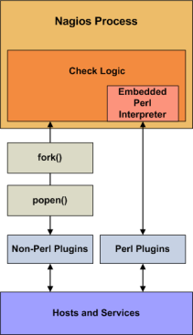

Up To: Contents
Up To: Contents
 See Also: Developing Plugins For Use With Embedded Perl
See Also: Developing Plugins For Use With Embedded Perl
|
Introduction Nagios can be compiled with support for an embedded Perl interpreter. This allows Nagios to execute Perl plugins much more efficiently that it otherwise would, so it may be of interest to you if you rely heavily on plugins written in Perl. Without the embedded Perl interpreter, Nagios executes Perl (and non-Perl) plugins by forking and executing the plugins as an external command. When the embedded Perl interpreter is used, Nagios can execute Perl plugins by simply making a library call.
Stephen Davies contributed the original embedded Perl interpreter code several years back. Stanley Hopcroft has been the primary person helping to improve the embedded Perl interpreter code quite a bit and has commented on the advantages/disadvanges of using it. He has also given several helpful hints on creating Perl plugins that work properly with the embedded interpreter. It should be noted that "ePN", as used in this documentation, refers to embedded Perl Nagios, or if you prefer, Nagios compiled with an embedded Perl interpreter. |
 |
Advantages
Some advantages of ePN (embedded Perl Nagios) include:
Disadvantages
The disadvantages of ePN (embedded Perl Nagios) are much the same as Apache mod_perl (i.e. Apache with an embedded interpreter) compared to a plain Apache:
Using The Embedded Perl Interpreter
If you want to use the embedded Perl interpreter to run your Perl plugins and scripts, here's what you'll need to do:
Compiling Nagios With Embedded Perl
If you want to use the embedded Perl interpreter, you'll first need to compile Nagios with support for it. To do this, simply run the configure script with the addition of the --enable-embedded-perl option. If you want the embedded interpreter to cache internally compiled scripts, add the --with-perlcache option as well. Example:
./configure --enable-embedded-perl --with-perlcache otheroptions...
Once you've rerun the configure script with the new options, make sure to recompile Nagios.
Plugin-Specific Use of the Perl Interpreter
Beginning with Nagios 3, you can specify which Perl plugins or scripts should or should not be run under the embedded Perl interpreter. This is particularly useful if you have troublesome Perl scripts which do not work well with the Perl interpreter.
To explicitly tell Nagios whether or not to use the embedded Perl interpreter for a particular perl script, add one of the following entries to your Perl script/plugin...
To tell Nagios to use the Perl interpreter for a particular script, add this line to the Perl script:
# nagios: +epn
To tell Nagios to NOT use the embedded Perl interpreter for a particular script, add this line to the Perl script:
# nagios: -epn
Either line must be located within the first 10 lines of a script for Nagios to detect it.
 Tip: If you do not explicitly use the method above to tell Nagios whether an individual plugin can be run under the Perl interpreter, Nagios will make will a decision for you. This decision process is controlled by the use_embedded_perl_implicitly variable. If the value is set to 1, all Perl plugins/scripts (that do not explicitly enable/disable the ePN) will be run under the Perl interpreter. If the value is 0, they will NOT be run under the Perl interpreter.
Tip: If you do not explicitly use the method above to tell Nagios whether an individual plugin can be run under the Perl interpreter, Nagios will make will a decision for you. This decision process is controlled by the use_embedded_perl_implicitly variable. If the value is set to 1, all Perl plugins/scripts (that do not explicitly enable/disable the ePN) will be run under the Perl interpreter. If the value is 0, they will NOT be run under the Perl interpreter.
Developing Plugins For Use With Embedded Perl
Information on developing plugins for use with the embedded Perl interpreter can be found here.